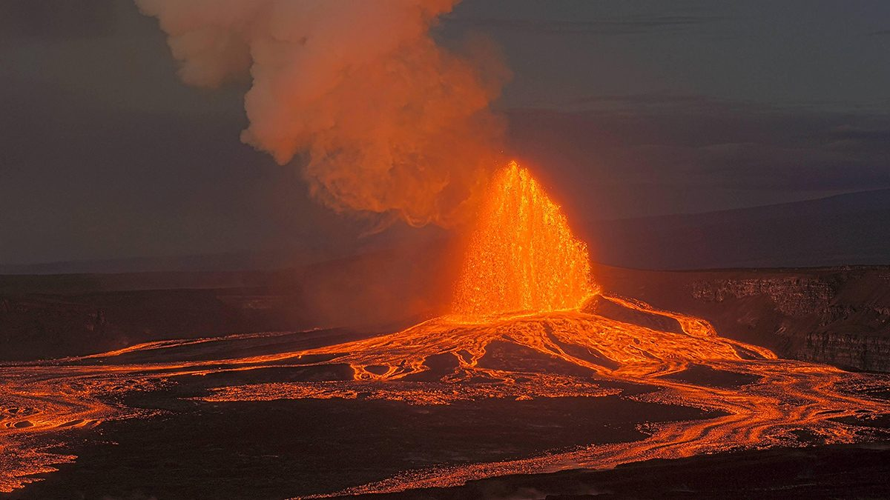

The island of Cyprus began to form some 90 million years ago during the Late Cretaceous, with molten rock pouring from the seafloor, solidifying, and building new oceanic crust. Over time, portions of this oceanic rock were wrenched upward by tectonic forces, eventually emerging as a rugged island made of ophiolite, a type of rock with a mottled green appearance said to look like the skin of a snake.
The more westerly feature, the Kouris River tombolo, formed first, developing about 50,000 years ago from river-deposited gravels and sands. The eastern tombolo extended southward from Cyprus, cutting off the Mediterranean Sea only within the past 2,000 years, according to geologists.
貓抓蛇的故事原文自己標了「according to legend」（根據傳說）；「貓和人一樣多、超過一百萬隻」也沒有給調查來源。
找碴點：原文說蛇綠岩是「一種有斑駁綠色外觀的岩石」（a type of rock）。但台灣林業署的地質公園手冊寫的是「蛇綠岩系」，並列出它包含橄欖岩、輝長岩、蛇紋岩、輝綠岩、玄武岩等好幾種岩石。那麼，看起來像蛇皮的到底是「蛇綠岩」還是其中的「蛇紋岩」（serpentinite）？蛇綠岩是一種岩石，還是一組岩石？去查這兩個詞的定義，再回頭看 NASA 這句話算不算講錯。
Eos（Research Spotlight）· 2026-11-03 · 作者 Matthew R. Francis · 論文：Guoqing Lin 等人，Journal of Geophysical Research: Solid Earth（2026-10），doi:10.1029/2026JB034515 讀原文 →讀論文摘要 →

2026 年 10 月 17 日，基拉韋厄火山哈雷茂茂（Halemaʻumaʻu）火山口裡的熔岩噴泉。本篇找到的兩個岩漿庫之一就在這個火山口正下方。這是 Eos 原文的題圖，照片不是研究資料的一部分。圖：USGS 夏威夷火山觀測站（公有領域）。
The researchers’ dense seismic array consisted of 1,815 small seismometers arranged to make a mesh roughly 12 kilometers on each side. To the natural seismic signals from Kīlauea itself, they added artificial signals generated by the giant T-Rex vibroseis truck, which produces a range of controlled vibrations for active-source seismology.
The two reservoirs are separate near the surface but may connect at greater depth, and the work represents important progress toward understanding the exact underground plumbing.
找碴點：Eos 寫「1,815 個」地震儀，論文摘要寫「1,800 多個」（more than 1,800），這兩個不衝突。但 Eos 說研究者「identified two reservoirs」（辨認出兩個岩漿庫），讀起來像是新發現；論文摘要的語氣卻是用震波去「描繪」兩個岩漿儲存區，並拿來和先前大地測量的結果對照。這兩個岩漿庫在這篇論文之前，是不是早就有人知道了？如果是，這篇真正新的東西是什麼？去 USGS 夏威夷火山觀測站的網站查查看。
Eos 第 1 段 "Not only did it erupt almost continuously from 1983 to 2018, it began a new series of eruptions in late 2024 that continue as of late 2026."
測站稀疏、缺清楚的震波影像
Eos 第 2 段。
兩個岩漿庫：哈雷茂茂火山口下、南破火山口下
Eos 第 3 段；論文摘要 "two principal magma storage regions beneath Halema'uma'u and the south caldera"。
Eos 題圖圖說 "Credit: Hawaiian Volcano Observatory, USGS, Public Domain"。
台灣：S 波陰影與 P 波延遲、40% 部分熔融、約 350 km³、七百多萬人、爭論幾十年、2017–2020 密集陣列、單一作者
Lin (2016) 摘要（Europe PMC 收錄）。只讀了摘要。作者中文名「林正洪」與中研院出自台灣的新聞報導，摘要只寫 Lin CH。
天文 · 火星地質基礎原文約 400 字 · 3 分鐘（論文另計）
火星上有紅寶石嗎？毅力號的雷射打出兩條不該出現的紅光
Rubies on Mars?
NASA 毅力號任務部落格 · 2026-11-09 · 作者 Roger C. Wiens（SuperCam 儀器主持人，普渡大學）· 論文：Ollila 等人，Geophysical Research Letters（2026-08），doi:10.1029/2026GL122537 讀原文 →讀論文摘要 →
Two years ago, the SuperCam team was startled to find strong, narrow luminescence peaks at two wavelengths of 692.7 and 694.1 nanometers when they shot a light-colored rock with the laser. This luminescence comes from delayed atomic transitions in chromium atoms present in a corundum mineral structure.
Corundum is a metamorphic and pegmatitic mineral which we would not expect to find on Mars, a planet that lacks plate tectonics. However, large meteor and asteroid impacts can create local metamorphism due to long-term heating from the impact.
找碴點：部落格說剛玉是「變質岩與偉晶岩中的礦物」（metamorphic and pegmatitic），而論文摘要說剛玉形成於「岩漿或變質過程」（magmatic or metamorphic processes）中富鋁、缺矽的環境。兩個說法的差別在哪？如果剛玉也可以直接從岩漿結晶出來，那「火星沒有板塊所以不該有剛玉」這個推論還成立嗎？另外，標題問的是「紅寶石」，內文與論文說的都是「含鉻的剛玉」：一顆礦物要符合什麼條件才能叫紅寶石？誰說了算？
第 1 段 "As a side benefit of the way SuperCam performs its Raman spectroscopy, it can also study time-resolved luminescence."、"SuperCam can time the delay…"
發光壽命為毫秒等級
論文摘要 "Two strong peaks (692.7 and 694.1 nm) with millisecond lifetimes"。部落格沒有給時間長短。
論文由 Ann Ollila 領銜、今年稍早刊於 Geophysical Research Letters
“By themselves, double white dwarfs will emit gravitational waves at a nearly continuous frequency. Add a sufficiently massive planet to the system, and its presence causes the binary to experience reflex motion, adding a Doppler modulation to the gravitational signal.”
For LISA, this modulation will appear as sidebands, secondary signals at both higher and lower frequencies than the primary one. McGrath likens the situation to modern radio communication, where some of the energy of a main radio carrier frequency goes into forming sidebands at adjacent upper and lower frequencies that carry messages (like voices or music).